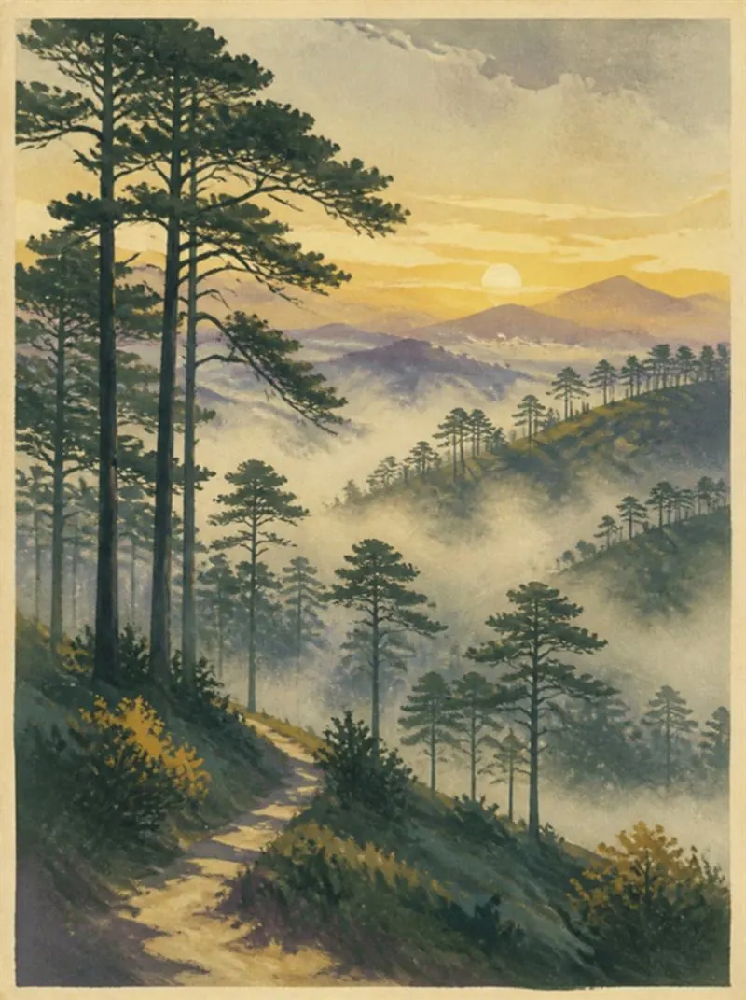
Rừng thông
Сосны и туман
Утром долины тонут в облаках, к полудню солнце прогревает сосновые склоны. Лучшее время для прогулок — рассвет.
Xin chào! Добро пожаловать в город вечной весны
Встречу, помогу добраться, подберу жильё и байк, свожу на рыбалку. Остальное беру на себя.
01Далат
Thành phố ngàn hoa — «город тысячи цветов»
Далат стоит на плато Лангбианг, в горах на высоте около полутора километров. Здесь прохладно круглый год: по утрам долины укрывает туман, днём пахнет сосновой смолой, а вечером в кафе зажигают камины.

Rừng thông
Утром долины тонут в облаках, к полудню солнце прогревает сосновые склоны. Лучшее время для прогулок — рассвет.
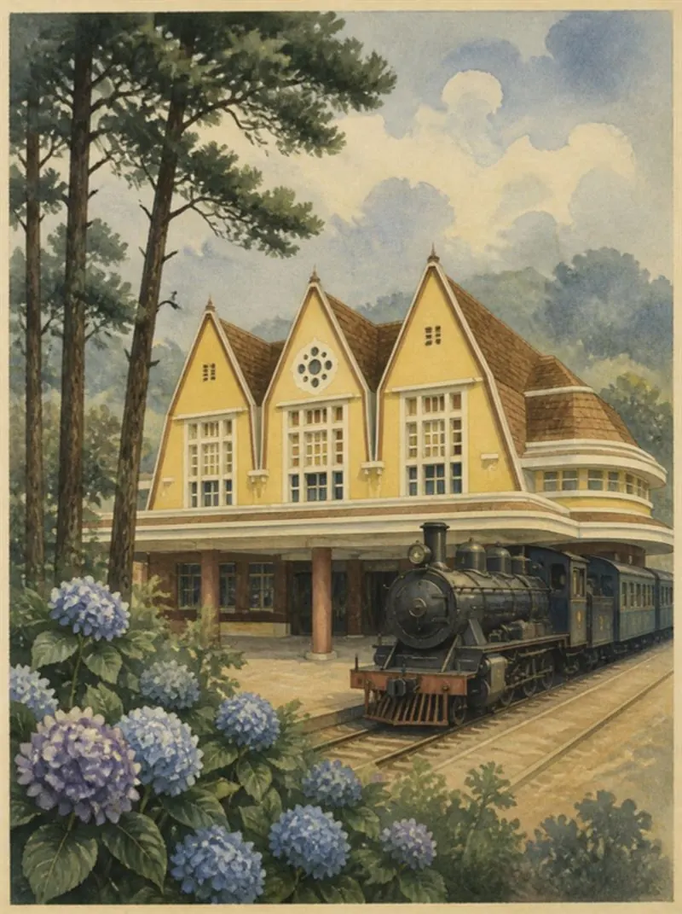
Ga Đà Lạt
Французы строили Далат как курорт в горах: виллы с черепичными крышами, собор с петушком на шпиле и вокзал в стиле ар-деко.
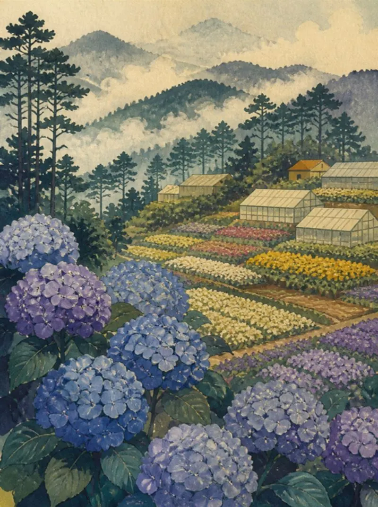
Thành phố ngàn hoa
Гортензии, розы, лилии и хризантемы растут на террасах и в теплицах — далатские цветы везут по всему Вьетнаму.
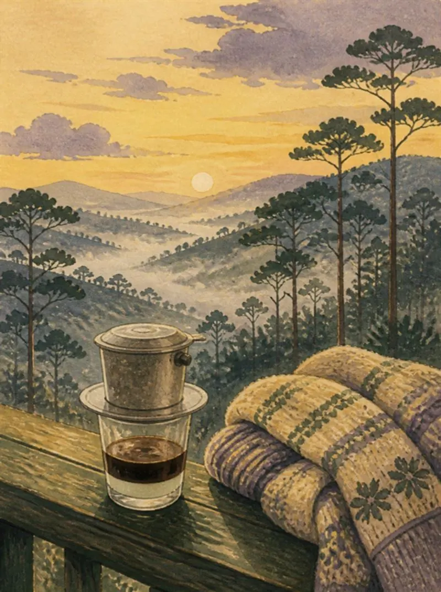
Cà phê phin
Кофе через фильтр-фин, горячий чай из артишока и кафе на склонах с видом на сосновые долины — местный ритуал.
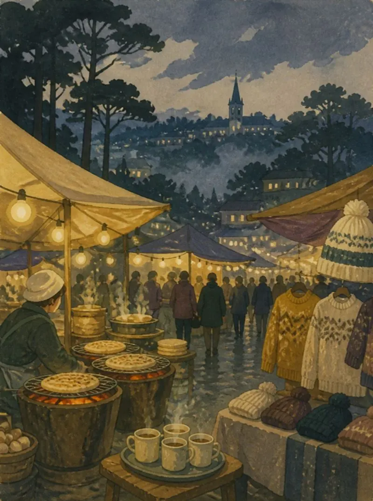
Chợ đêm
Вечером в центре зажигаются огни: баньчанг-ныонг — «далатская пицца» на углях, горячее соевое молоко и вязаные шапки от ночной прохлады.
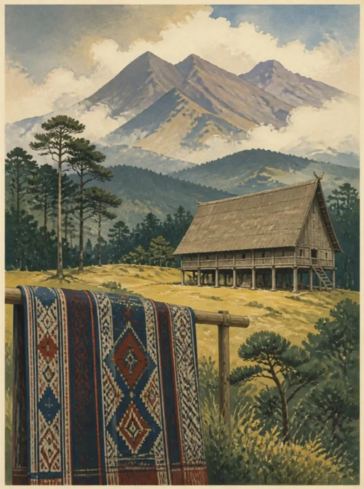
Núi Langbiang
Гора-легенда над городом и деревни народа кхо: ручное ткачество и гонги. Культура гонгов Центрального нагорья — наследие ЮНЕСКО.
02Дорога
Прямых рейсов из России в Далат нет. Сначала летите в Хошимин, Ханой или Камрань, оттуда — внутренним рейсом, автобусом или машиной. Подскажу, как удобнее именно вам.
В пути: 40–50 минут от аэропорта до центра (около 30 км)
Аэропорт открылся после ремонта в августе 2026. Летают рейсы из Ханоя, Хошимина, Дананга и других городов Вьетнама; международный рейс пока один — из Куала-Лумпура. Такси лучше заказать заранее: приложения у терминала работают не всегда.
В пути: 3–4 часа, 130–160 км
Ориентир по цене: минивэн или автобус 180–350 тыс. VND с человека; машина целиком 1,2–2 млн VND
Самый частый путь для тех, кто прилетел в Камрань. Дорога идёт через перевал Кханьле (Хонзяо): около 33 км серпантина с подъёмом до 1500 м. Выезжайте утром и договоритесь о цене до посадки.
В пути: 7–8 часов, иногда до 9
Рейсы Phuong Trang (Futa) идут с автовокзала Миен Тай до автовокзала Далата. Билеты лучше купить онлайн заранее: на вокзале касса может быть закрыта. Любите спать в дороге — берите ночной или вечерний рейс.
В пути: 4–6 часов на автобусе, 3–4 на машине (около 160 км)
Берите прямой рейс: через агентства бывают пересадки, и дорога растягивается до 8 часов. Если едете вдвоём-втроём, машина с водителем часто выходит удобнее.
В пути: Нячанг — Далат около 140 км по трассе QL27C, 2–3 часа без остановок
Подъём в горы, туман, быстрые автобусы и грузовики на спусках: не обгоняйте на поворотах, на спуске тормозите двигателем, заправьтесь заранее и проверьте погоду. На байке тем более выезжайте днём.
Время и цены — ориентиры на ноябрь 2026, а не мои тарифы. Перед поездкой подскажу, как лучше. Автовокзал и аэропорт есть на карте.
03Услуги
Выберите то, что нужно, — или доверьте мне всю организацию поездки.
Подскажу, как лучше добраться в Далат, и встречу вас, когда приедете — в аэропорту или на месте, даже если вы приедете ночью. Помогу освоиться в первый день.
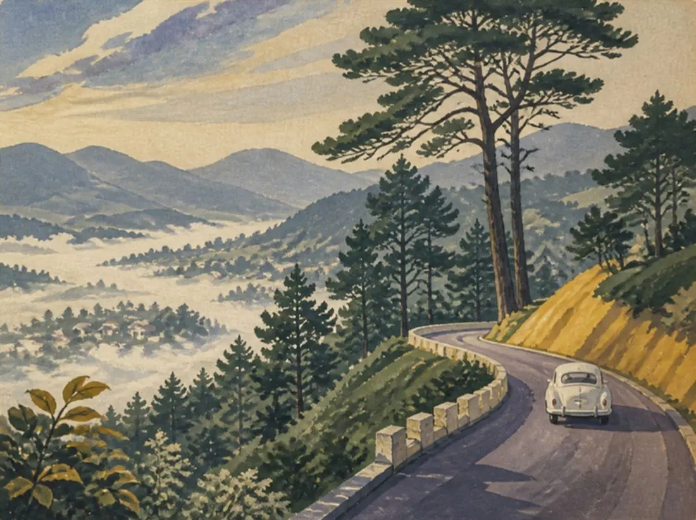
Подберу отель, апартаменты или виллу под ваш бюджет и формат отдыха. Проверяю варианты сам — без сюрпризов при заселении.
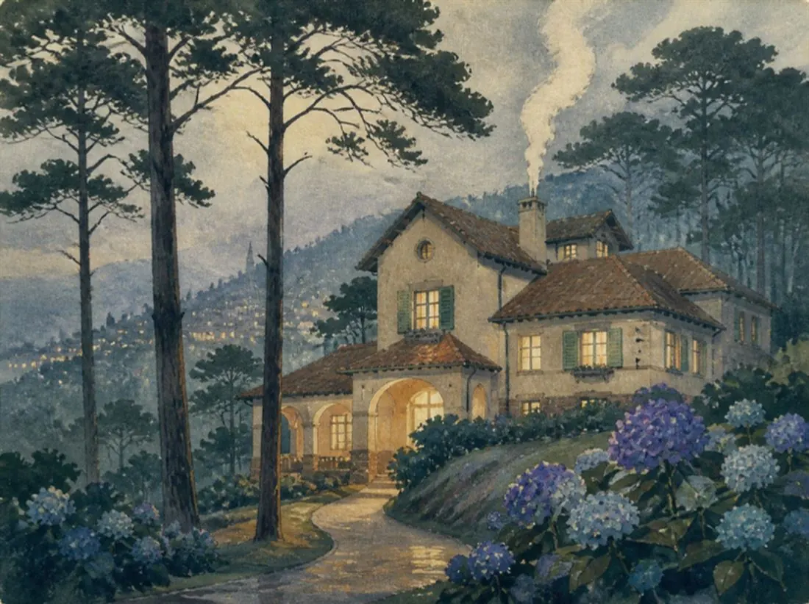
✓ проверено лично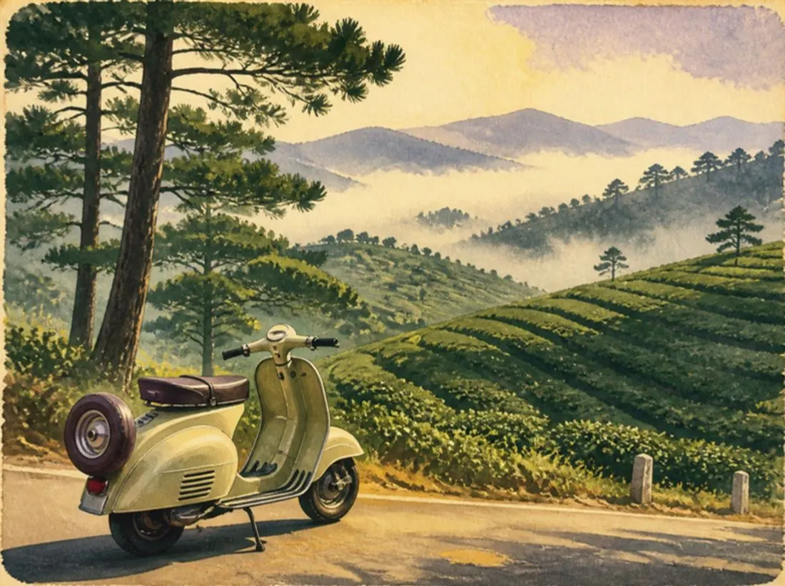
Найду надёжный байк или скутер и привезу прямо к дому. Расскажу про местные правила, заправки и лучшие маршруты.
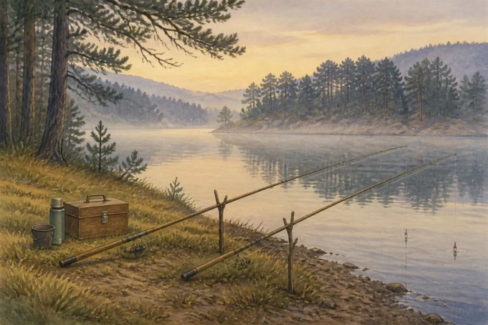
Я сам рыбак — покажу места, где клюёт
Организую спокойную рыбалку с берега на озёрах среди сосен вокруг Далата. Подберу место под погоду и сезон, дам снасти и наживку, отвезу и буду рядом — подскажу, как и на что ловить.
Заболели, потеряли документы, сломался байк или нужен переводчик в больнице, банке или полиции — напишите, приеду и помогу разобраться.
Нужна помощь04Как это работает
Как на открытке из Далата — только вживую
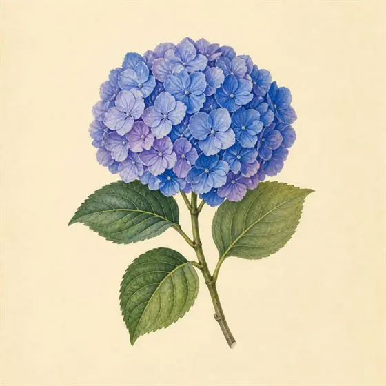
01Напишите даты, сколько вас и что нужно организовать — отвечу и уточню детали.
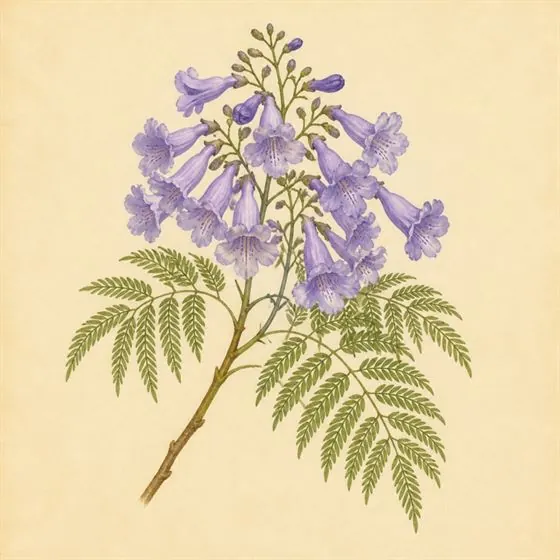
02Подберу жильё и байк, пришлю фото и видео, договоримся о времени встречи.
Подскажу дорогу и встречу, когда приедете. Дальше — сосны, озёра, кофе и отдых.
05Отзыв
Пара слов о поездке очень помогает другим путешественникам. Отзыв придёт мне в Telegram или WhatsApp — после проверки я опубликую его на сайте.
?Частые вопросы
Бывает, если выбрать жильё наугад. Далат стоит на высоте около 1500 м: сырость и прохлада — обычное дело, особенно в домах на тенистой стороне холма и без сквозного проветривания. Поэтому смотрите на солнечную сторону, окна на две стороны и вентиляцию. Хорошо дышат дома на холмах вроде Чьеу Вьет Выонг и Ан Шон — там суше и больше ветра.
Я лично проверяю каждый вариант перед заселением: смотрю углы, шкафы, потолок за шторами и ванную на следы сырости. Посмотрите варианты жилья или спросите меня в Telegram.
Из России прямых рейсов в Далат нет, поэтому большинство добирается так: прилетают в Хошимин, Камрань (Нячанг) или Ханой и едут дальше. Из Камрани или Нячанга на такси или минивэне — примерно 3–4 часа, из Хошимина на спальном автобусе — 7–8 часов. Можно долететь из другого города Вьетнама до аэропорта Льенкхыонг (DLI), около 30 км от города. Время и ориентиры по цене — в разделе «Дорога».
Дорога идёт по серпантину, в автобусе и машине может укачивать. Напишите, откуда и когда выезжаете — подскажу, как лучше добраться, и встречу вас в Далате.
Рельеф здесь горный: крутые подъёмы и спуски. Слабые 50 cc вдвоём на подъёмах не тянут, поэтому берите скутер 110–150 cc. И главное — исправные тормоза и трансмиссия: на спусках это вопрос безопасности, а не комфорта.
Нужны мотоциклетные права категории A и страховка: без прав страховка при аварии может не сработать. Шлем обязателен.
Байки я подбираю и проверяю сам. Узнать про аренду байка.
Днём на солнце около +23…+25 °C и хватает футболки, а после заката в горах быстро холодает до +13…+16 °C. Обязательно возьмите худи, ветровку и закрытую обувь — на байке по вечерам и на рассвете без них не обойтись. Если что-то забыли, тёплые вещи продаются на ночном рынке.
Центр у озера Суан Хыонг — всё пешком: рынки, кафе, аптеки, ровная дорожка для бега на 5 км. Минусы: шумно по выходным и дороже. Показать на карте
Ан Шон и Чьеу Вьет Выонг — тихие сосновые холмы с виллами, сухо, панорамные виды, 10 минут до центра. Подходят для спокойной жизни и удалённой работы, но нужен байк. Показать на карте
Все районы с описанием — на интерактивной карте Далата (включите «Показать районы для жизни»).